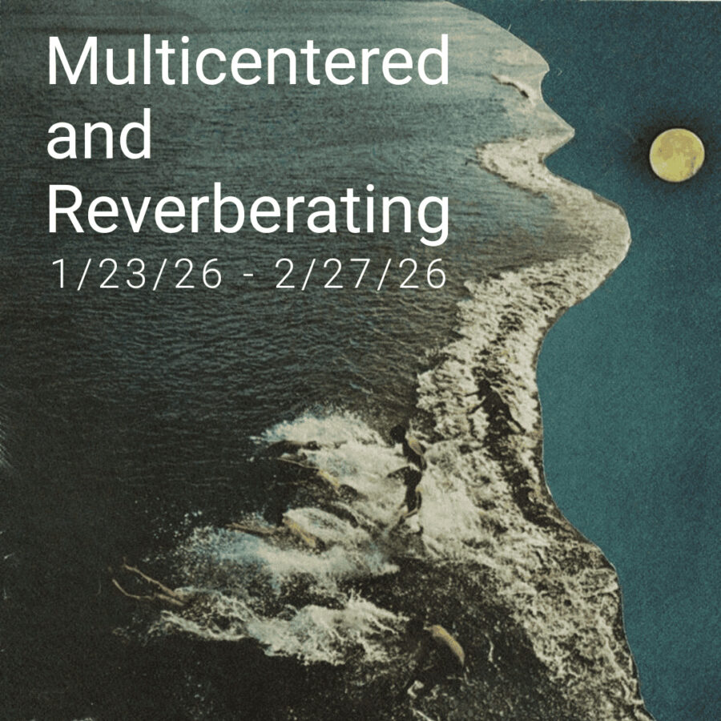

Multicentered and Reverberating
Multicentered and Reverberating
Sonya Bogdanova – Kacie Lees – Melissa McClung – Susan Pasowicz – John Phelan – Carol Peyes – Tim Stone – Kevin Stuart – Amy Vogel
In the late 1970s, Canadian media theorist Marshall McLuhan posited two types of sensory-cultural paradigms: visual and acoustic space. According to McLuhan, we in the industrialized West live in visual space. We transitioned to this during the time of the Greeks, and it was reinforced during the Renaissance. He writes that, since, “Western civilization has been mesmerized by a picture of the universe as a limited container in which all things are arranged according to the vanishing point, in linear geometric order.”
He continues, “Such is the power of Euclidian or visual space that we can’t live with a circle unless we square it.”
Acoustic space, he contends, existed for hundreds of thousands of years prior (and still outlives the Greeks in certain cultures). “The world was multicentered and reverberating,” he writes. “It was gyroscopic. Life was like being inside a sphere, 360 degrees without margins; swimming underwater; or balancing on a bicycle.” Acoustic space does not represent things “one-at-a-time” with the “uniform ethos of the alphabet.” Rather, it “comes to us from above, below, and the sides.”
This is not merely a morphological concept. McLuhan implies that whichever paradigm a culture accepts determines in large part that society’s “perception of sanity.” Optical, linear logic tends towards hierarchy, exclusion, and—McLuhan ventures—even violence: “something is either in that space or not.” I think this determination is political in an age of division and persecution.
So this exhibition is a thought experiment: is visual art doomed to visual space? Can visual artists escape the vanishing point and capture the multicentered and reverberating, non-hierarchical aspects of acoustic space?
GUEST CURATOR: